¿Qué es la Agenda 2030?
La Agenda 2030 para el Desarrollo Sostenible es un plan de acción global adoptado en 2015 por los Estados Miembros de las Naciones Unidas. Tiene como objetivo erradicar la pobreza, proteger el planeta y asegurar la prosperidad para todos como parte de una nueva agenda de desarrollo sostenible.
Los 17 Objetivos de Desarrollo Sostenible (ODS)
- Fin de la pobreza 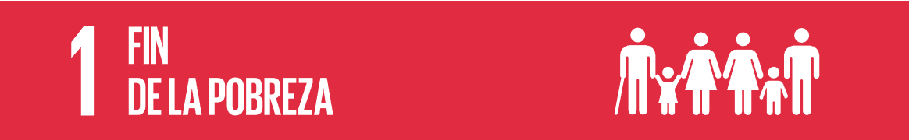
- Hambre cero 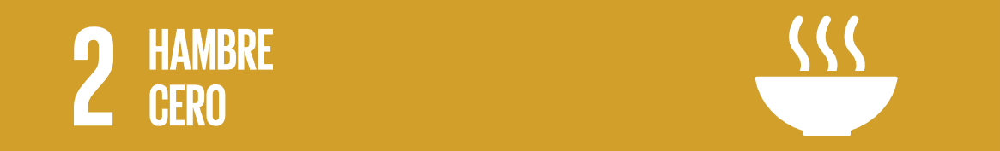
- Salud y bienestar 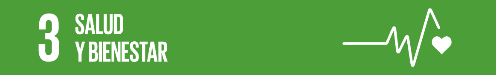
- Educación de calidad
- Igualdad de género 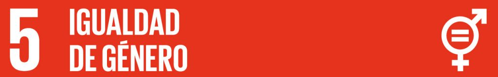
- Agua limpia y saneamiento 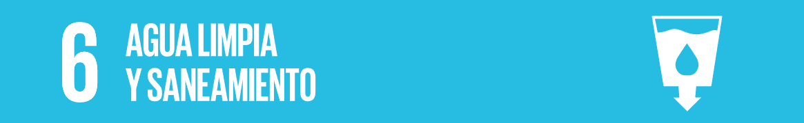
- Energía asequible y no contaminante 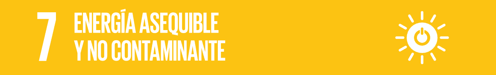
- Trabajo decente y crecimiento económico 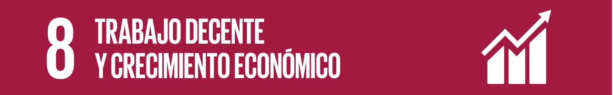
- Industria, innovación e infraestructura 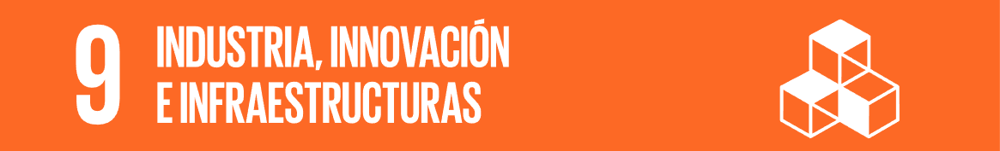
- Reducción de las desigualdades 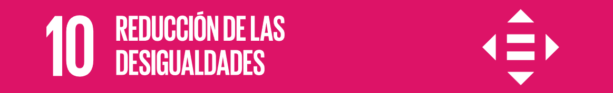
- Ciudades y comunidades sostenibles 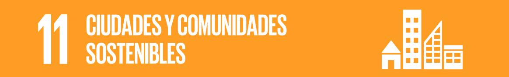
- Producción y consumo responsables 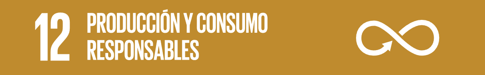
- Acción por el clima 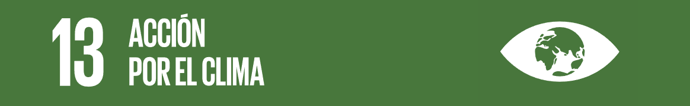
- Vida submarina 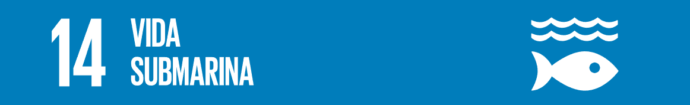
- Vida de ecosistemas terrestres 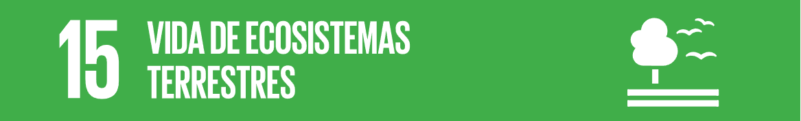
- Paz, justicia e instituciones sólidas 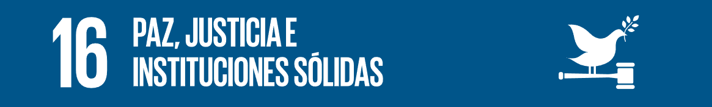
- Alianzas para lograr los objetivos 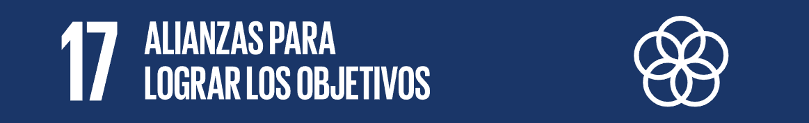
Licencia
Este proyecto está licenciado bajo la Licencia Apache 2.0. Puede usar, modificar y distribuir este contenido conforme a los términos de la licencia.